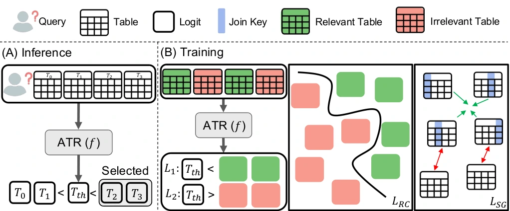
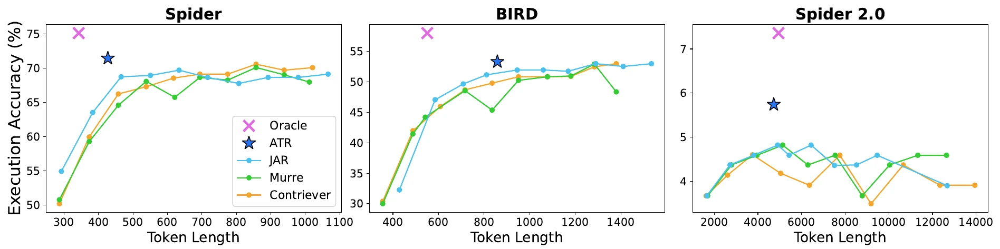

Abstract
Retrieving relevant tables from extensive databases for a given natural language query is essential for accurately answering questions in tasks such as text-to-SQL. Existing table retrieval approaches select a pre-determined set of k tables with the highest similarity to the query. However, the number of required tables varies across queries and cannot be known in advance. Enforcing a fixed number of retrieved tables regardless of the query may either retrieve an undersized set, failing to obtain all necessary evidence, or retrieve an oversized pool, including irrelevant tables. To address this issue, we propose an adaptive table retrieval method that adjusts the number of tables retrieved according to the requirements of each query. Specifically, we utilize an adaptive thresholding mechanism to selectively retrieve tables and integrate a sliding-window reranking algorithm to efficiently process a large table corpus. Extensive experiments on Spider, BIRD, and Spider 2.0 demonstrate that our method effectively addresses the limitations of the top-k retrieval strategy, improving performance in retrieval and downstream tasks. Our code and data are available at GitHub.
Adaptive Table Retrieval
The number of tables a query needs is unknown in advance and varies widely; in Spider 2.0 it ranges from 1 to 366. A small k misses required tables, and a large k adds irrelevant ones.

- Threshold token. A transformer encoder reads a threshold token, the query and the candidate tables (database, table and column names) together, and outputs a logit for every table token and for the threshold token. Every table whose logit exceeds the threshold’s is retrieved, so the number of tables is set per query.
- Training. An adaptive thresholding loss places relevant tables above the threshold and irrelevant ones below it. A relevance calibration loss sharpens query–table scores, and a semantic grouping loss pulls joinable tables together.
- Sliding-window reranking. The top 50 candidates from a bi-encoder are scored in overlapping windows, starting from the lowest-ranked, so large schemas fit the encoder.
Results
| Spider | BIRD | Spider 2.0 | ||||||||
|---|---|---|---|---|---|---|---|---|---|---|
| Retriever | k | P | CR | F1 | P | CR | F1 | P | CR | F1 |
| UAE | 3 | 46.1 | 88.0 | 59.5 | 48.2 | 63.5 | 58.3 | 27.1 | 27.6 | 29.7 |
| 5 | 29.5 | 96.4 | 44.1 | 32.7 | 77.3 | 46.5 | 20.7 | 34.9 | 26.3 | |
| 10 | 15.0 | 99.0 | 25.6 | 18.7 | 95.1 | 30.9 | 14.2 | 49.0 | 20.7 | |
| JAR (w. UAE) | 3 | 48.4 | 94.1 | 62.3 | 53.6 | 74.8 | 64.4 | 29.1 | 27.1 | 30.8 |
| 5 | 29.9 | 98.5 | 44.7 | 34.4 | 82.9 | 48.9 | 21.8 | 33.8 | 26.5 | |
| 10 | 15.1 | 99.2 | 25.7 | 18.7 | 95.2 | 30.9 | 14.3 | 43.9 | 19.7 | |
| ATR (ours, w. UAE) | adaptive | 69.3 | 99.4 | 78.1 | 52.8 | 97.1 | 65.1 | 19.9 | 68.7 | 26.7 |
Table retrieval (%): precision (P), complete recall (CR) and F1, from Table 1 of the paper. All rows use UAE-Large-V1 as the first-stage encoder; results with Contriever and LLM-based retrievers are in the paper.

- Fixed-k retrievers trade precision for recall as k changes. ATR reaches the highest complete recall on all three datasets, and on Spider and BIRD it does so with much higher precision than k = 5 or 10.
- ATR reaches higher execution accuracy with fewer input tokens than top-k retrieval on all three datasets; on Spider it uses 430 fewer tokens than the best top-k setting (k = 8).
BibTeX
@inproceedings{kim2026adaptive,
title = {Retrieve Only Relevant Tables Whether Few or Many: Adaptive Table Retrieval Method},
author = {Kim, Taehee and Yang, Seungbin and Kim, Jihwan and Choo, Jaegul},
booktitle = {Findings of the Association for Computational Linguistics: ACL 2026},
year = {2026}
}